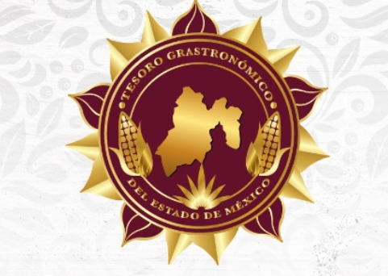
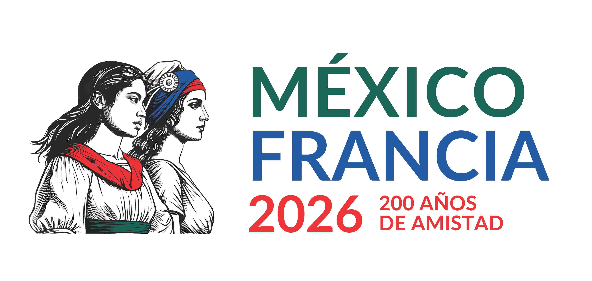
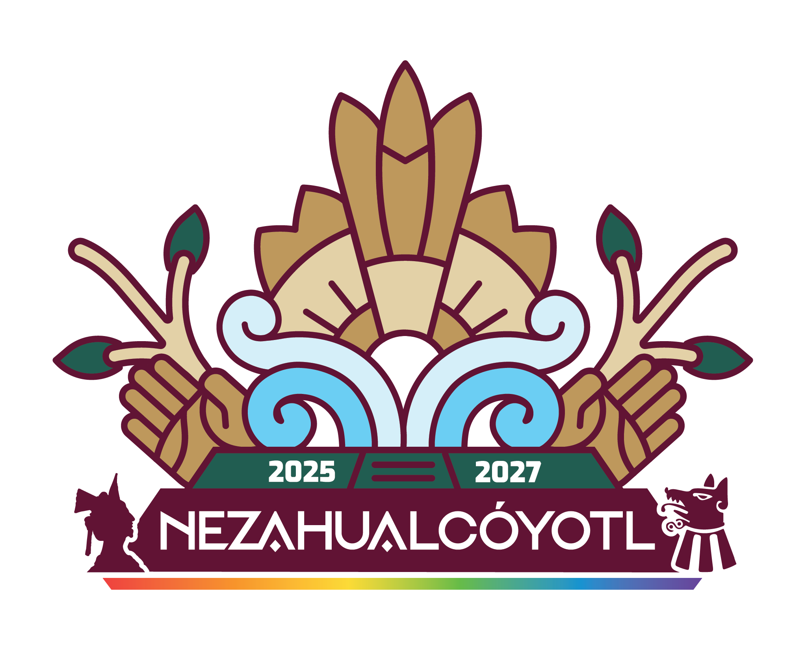
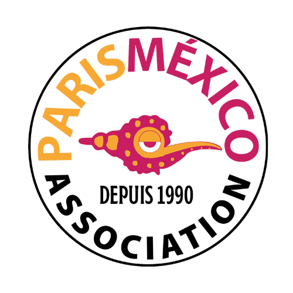

Abierta
Categoría 01
Cocineras y Cocineros Tradicionales
Portadores de recetas, técnicas y maíces nativos de las regiones del Estado de México.
Cierra 4 sep
Ver bases →

Convocatorias rumbo a París 2026
Un programa estatal que selecciona a las cocineras y cocineros tradicionales, restaurantes, jóvenes talentos y productores de bebidas ancestrales que representarán la riqueza mexiquense en la temporada cultural México–Francia.

Cada categoría tiene requisitos, etapas de evaluación y calendario propios. Revisa las bases antes de iniciar tu registro.
Portadores de recetas, técnicas y maíces nativos de las regiones del Estado de México.
Establecimientos que reinterpretan el patrimonio culinario mexiquense con propuesta de autor.
Estudiantes de licenciatura que compiten con un platillo de raíz mexiquense y mirada global.
Pulques, mezcales y destilados de proceso artesanal con arraigo comunitario.





